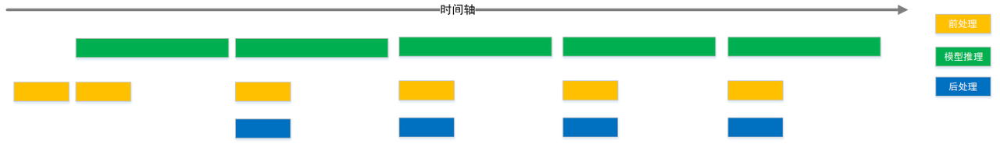

4. runtime应用开发
4.1. 概述
本章节介绍在地平线平台进行应用开发，将量化训练得到的模型部署到J5开发板上运行起来，需要您注意的相关注意事项在此章节也会介绍。
注意
在开始开发应用前，请确保您已经根据 环境部署 的内容完成了开发环境准备。
最简易的开发过程包括工程创建、工程实现、工程编译与运行三个阶段。 考虑到实际业务场景开发的较复杂需求，对于常用的多模型控制概念和应用调优建议也都提供了一些说明。
4.2. 工程创建
地平线推荐使用cmake进行应用工程管理，前文介绍的环境部署部分也已经完成了cmake安装。 在阅读本节内容前，我们希望您已经了解cmake的使用。
地平线开发库提供了arm的依赖环境和板端应用程序。我们提供的工程依赖信息如下：
地平线评测库libdnn.so，路径：
~/.horizon/ddk/j5_aarch64/dnn/lib/。地平线编译器依赖
libhbrt_bayes_aarch64.so，路径：~/.horizon/ddk/j5_aarch64/dnn/lib/。地平线J5芯片系统依赖，路径：
~/.horizon/ddk/j5_aarch64/appsdk/appuser/。C编译器 aarch64-linux-gnu-gcc。
C++编译器 aarch64-linux-gnu-g++。
创建一个工程用户需要编写 CMakeLists.txt 文件。
脚本中定义了编译工具路径， CMakeLists.txt 文件中定义了一些编译选项，以及依赖库、头文件的路径。参考如下：
cmake_minimum_required(VERSION 2.8)
project(your_project_name)
set(CMAKE_CXX_FLAGS "${CMAKE_CXX_FLAGS} -std=c++11")
set(CMAKE_CXX_FLAGS_DEBUG " -Wall -Werror -g -O0 ")
set(CMAKE_C_FLAGS_DEBUG " -Wall -Werror -g -O0 ")
set(CMAKE_CXX_FLAGS_RELEASE " -Wall -Werror -O3 ")
set(CMAKE_C_FLAGS_RELEASE " -Wall -Werror -O3 ")
if (NOT CMAKE_BUILD_TYPE)
set(CMAKE_BUILD_TYPE Release)
endif ()
message(STATUS "Build type: ${CMAKE_BUILD_TYPE}")
# define dnn lib path
set(DNN_PATH "~/.horizon/ddk/j5_aarch64/dnn/")
set(APPSDK_PATH "~/.horizon/ddk/j5_aarch64/appsdk/appuser/")
set(DNN_LIB_PATH ${DNN_PATH}/lib)
set(BPU_libs dnn cnn_intf hbrt_bayes_aarch64)
include_directories(${DNN_PATH}/include
${APPSDK_PATH}/include)
link_directories(${DNN_LIB_PATH}
${APPSDK_PATH}/lib)
add_executable(user_app main.cc)
target_link_libraries(user_app
${BPU_libs}
pthread
rt
dl)
注意在以上示例中，我们没有指定编译器位置，会在配合工程编译阶段补充编译器指定， 请参考 工程编译与运行 小节部分的介绍。
4.3. 工程实现
工程实现主要介绍如何将前文模型转换得到的hbm模型在地平线平台运行起来。 最简单的步骤应该包括模型加载、准备输入数据、准备输出内存、推理和结果解析，以下是一份简单的加载部署模型参考代码：
#include <iostream>
#include "dnn/hb_dnn.h"
#include "dnn/hb_sys.h"
float quanti_shift(int32_t data, uint32_t shift) {
return static_cast<float>(data) / static_cast<float>(1 << shift);
}
float quanti_scale(int32_t data, float scale) { return data * scale; }
int main(int argc, char **argv) {
// 第一步加载模型
hbPackedDNNHandle_t packed_dnn_handle;
const char* model_file_name= "./mobilenetv1_cls/compile/model.hbm";
hbDNNInitializeFromFiles(&packed_dnn_handle, &model_file_name, 1);
// 第二步获取模型名称
const char **model_name_list;
int model_count = 0;
hbDNNGetModelNameList(&model_name_list, &model_count, packed_dnn_handle);
// 第三步获取dnn_handle
hbDNNHandle_t dnn_handle;
hbDNNGetModelHandle(&dnn_handle, packed_dnn_handle, model_name_list[0]);
// 第四步准备输入数据
hbDNNTensor input;
hbDNNTensorProperties input_properties;
hbDNNGetInputTensorProperties(&input_properties, dnn_handle, 0);
input.properties = input_properties;
auto &mem = input.sysMem[0];
int yuv_length = 224 * 224 * 3;
hbSysAllocCachedMem(&mem, yuv_length);
//memcpy(mem.virAddr, yuv_data, yuv_length);
//hbSysFlushMem(&mem, HB_SYS_MEM_CACHE_CLEAN);
// 第五步准备模型输出数据的空间
int output_count;
hbDNNGetOutputCount(&output_count, dnn_handle);
hbDNNTensor *output = new hbDNNTensor[output_count];
for (int i = 0; i < output_count; i++) {
hbDNNTensorProperties &output_properties = output[i].properties;
hbDNNGetOutputTensorProperties(&output_properties, dnn_handle, i);
int out_aligned_size = output_properties.alignedByteSize;
hbSysMem &mem = output[i].sysMem[0];
hbSysAllocCachedMem(&mem, out_aligned_size);
}
// 第六步推理模型
hbDNNTaskHandle_t task_handle = nullptr;
hbDNNInferCtrlParam infer_ctrl_param;
HB_DNN_INITIALIZE_INFER_CTRL_PARAM(&infer_ctrl_param);
hbDNNInfer(&task_handle,
&output,
&input,
dnn_handle,
&infer_ctrl_param);
// 第七步等待任务结束
hbDNNWaitTaskDone(task_handle, 0);
//第八步解析模型输出，例子就获取mobilenetv1的top1分类
float max_prob = -1.0;
int max_prob_type_id = 0;
hbSysFlushMem(&(output->sysMem[0]), HB_SYS_MEM_CACHE_INVALIDATE);
float *data = reinterpret_cast< float *>(output->sysMem[0].virAddr);
int *shape = output->properties.validShape.dimensionSize;
int * aligned_shape = output->properties.alignedShape.dimensionSize;
auto properties = output->properties;
int offset = 1;
if (properties.tensorLayout == HB_DNN_LAYOUT_NCHW) {
offset = aligned_shape[2] * aligned_shape[3];
}
for (auto i = 0; i < shape[1] * shape[2] * shape[3]; i++) {
float score;
if (properties.quantiType == SHIFT) {
score = quanti_shift(data[i * offset], properties.shift.shiftData[i]);
} else if (properties.quantiType == SCALE) {
score = quanti_scale(data[i * offset], properties.scale.scaleData[i]);
} else {
std::cout << "quanti type error!";
return -1;
}
if(score < max_prob)
continue;
max_prob = score;
max_prob_type_id = i;
}
std::cout << "max id: " << max_prob_type_id << std::endl;
// 释放内存
hbSysFreeMem(&(input.sysMem[0]));
hbSysFreeMem(&(output->sysMem[0]));
// 释放模型
hbDNNRelease(packed_dnn_handle);
return 0;
}
示例代码中，为了缩减篇幅，对于部分数据就直接使用了已知的常数。
在实际使用过程中，您应该通过 hbDNNGetInputTensorProperties/hbDNNGetOutputTensorProperties 等接口获取尺寸和数据类型等信息。
需要您注意的是，在输入数据准备阶段，我们注释掉了一段 memcpy 代码。
这里应当是根据模型的输入格式要求准备输入样本，并将其拷贝到 input.sysMem[0] 中。
更加全面的工程实现指导请阅读 《BPU SDK API手册》 。
4.4. 工程编译和运行
结合 工程创建 一节中的cmake工程配置，参考如下编译脚本：
# define gcc path for arm
LINARO_GCC_ROOT=/opt/gcc-ubuntu-9.3.0-2020.03-x86_64-aarch64-linux-gnu/
DIR=$(cd "$(dirname "$0")";pwd)
export CC=${LINARO_GCC_ROOT}/bin/aarch64-linux-gnu-gcc
export CXX=${LINARO_GCC_ROOT}/bin/aarch64-linux-gnu-g++
rm -rf build_arm
mkdir build_arm
cd build_arm
cmake ${DIR}
make -j8
根据 环境部署 部分的指引，您的开发机中应该已经安装有相应编译器，将上述脚本中的编译器配置指定为您的安装项目即可。
arm程序拷贝到地平线开发板上可运行，注意程序依赖的文件也需要一同拷贝到开发板，并在启动脚本中配置依赖。
例如我们的示例程序依赖库有： libhbrt_bayes_aarch64.so、libdnn.so，
这两个依赖库在本地的位置为： ~/.horizon/ddk/j5_aarch64/dnn/lib/，需要将之上传到板子的运行环境中。
建议在板端的 /userdata 路径下新建 lib 路径并将库传送至该目录下，则在板端运行程序前，需指定的依赖库路径信息如下：
export LD_LIBRARY_PATH=$LD_LIBRARY_PATH:/userdata/lib
4.5. 多模型控制策略
多模型场景中，每个模型都需要使用有限的计算资源完成推理，不可避免地会出现计算资源地争夺情况。 为了便于您控制多模型的执行，地平线提供了模型优先级的控制策略供您使用。
4.5.1. 模型优先级控制
注意
请注意，此功能仅支持在开发板端实现，x86模拟器不支持此功能。
J5芯片BPU计算单元硬件本身没有任务抢占功能，对于每一个推理任务，一旦它进到BPU模型计算之后，在该任务执行完成之前都会一直占用BPU， 其他任务只能排队等待。此时很容易出现BPU计算资源被一个大模型推理任务所独占，进而影响其他高优先级模型的推理任务执行。 针对这种问题，Runtime SDK基于模型的优先级通过软件的方式实现了BPU资源抢占的功能。
其中有以下点需要被关注：
编译后的数据指令模型在BPU上进行推理计算时，它将表现为1个或者多个function-call 的调用，其中function-call是BPU的执行粒度， 多个function-call调用任务将在BPU的硬件队列上按序进行调度，当一个模型所有的function-call都执行完成， 那么一个模型推理任务也就执行完成了。
基于上述描述，BPU模型任务抢占粒度设计为function-call更为简单，即BPU执行完一个function-call之后，暂时挂起当前模型， 然后切入执行另外一个模型，当新模型执行完成之后，再恢复原来模型的状态继续运行。 但是这里存在两个问题，第一是经过编译器编译出来的模型function-call都是merge在一起，此时模型只有一个大的function-call， 它无法被被抢占； 第二是每个function-call的执行时间比较长或者不固定，也会造成抢占时机不固定，影响抢占效果。
为了解决上述的两个问题，地平线在模型编译器和系统软件层面都给予了支持，下面分别介绍其实现原理和操作方法：
首先，如果您使用PTQ方案处理模型，则在 模型转换 阶段，可以在模型的YAML配置文件中的编译器相关参数(
compiler_parameters)中，添加max_time_per_fc参数。其次，系统软件层面设计了
BPLAT_CORELIMIT环境变量用于设置可抢占的粒度。 如将此参数设置为2，则高优先级被调度执行的时间为前面2个低优先级function-call的处理时间。 如果为0，则不抢占。因此，为了尽早执行高优先级的任务，可在 上板 时，先运行export BPLAT_CORELIMIT=1将此环境变量的取值设置为1。 这样当系统底层收到模型的function-call时，会判断其优先级，对于优先级高的function-call则放入单独队列，以便能够在一个function-call 执行完成之后，抢占到BPU资源。接着，由于模型抢占机制是在libdnn中实现的，继续设置
dnn的infer接口提供的hbDNNInferCtrlParam.priority参数。如：配置infer任务为HB_DNN_PRIORITY_PREEMP(255)，则为抢占任务，可支持function-call级别抢占； 您也可以配置优先级为[0,255]的任意等级，在同等条件下的执行队列中(粒度为任务)，优先级越高的task会更优先执行。 需要说明的是，目前DNN内部最多支持8个任务同时进行。抢占任务不受此限制。 即若已经有8个任务正在运行，提交非抢占任务需要等待正在运行的任务数小于8才可以开始运行，提交抢占任务可以直接开始运行。
4.6. 应用调优建议
地平线建议的应用调优策略包括工程任务调度和算法任务整合两个方面。
工程任务调度 方面，我们推荐您使用一些workflow调度管理工具，充分发挥不同任务阶段的并行能力。 一般AI应用可以简单拆分为输入前处理、模型推理、输出后处理三个阶段，在简易流程下，其处理流程如下图。

充分利用workflow管理实现不同任务阶段并行后，理想的任务处理流程将达到下图效果。
算法任务整合 方面，地平线推荐您使用多任务模型。 这样一方面可以在一定程度上避免多模型调度管理的困难； 另一方面多任务模型也能充分共享主干网络的计算量，较于使用各个独立的模型，可以在整个AI应用级别明显减少计算量，从而达到更高的整体性能。 在地平线内部和许多合作客户的业务实践中，多任务也是常见的应用级优化策略。